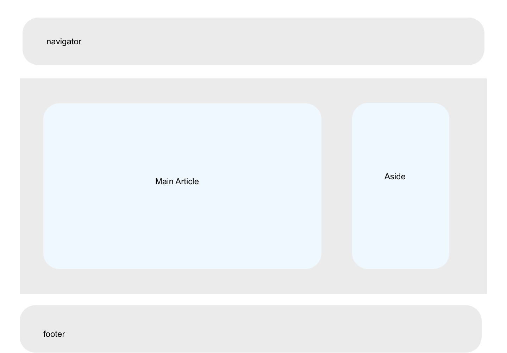

What: Corner treatments are the usage of rounded curves for box corners, as opposed to sharp right angles that are typically used for boxes. The usage of roudned corners should be used consisently across the website.
When: These type of corners should be used when any rectangular object appears, such as boxes, buttons, menus, and tabs.
Why: The repeated usage of rounded corners aid the visual unification of a website. The usage of rounded corners also help make the website feel more interesting and less boring.
How: One can use rounded corners to match the overall feel and image of the webstite. However, one should not overuse rounded corners, the usage of rounded corners must be consistent within groups. And not all corners of a box may have a rounded corner, sometimes it is more visually stimulating to have a box that only uses two rounded corners as opposed to all four. The rounded degree of the corner must also stay consistent across groups.
Design Prototype: 